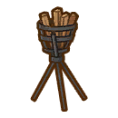
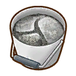
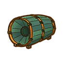
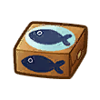
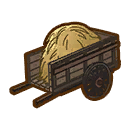
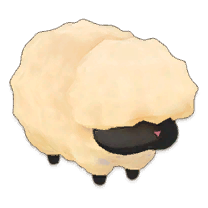

Habilidades

Las habilidades son una mecánica en Story of Seasons: Pioneers of Olive Town basada en las actividades que realizas en el juego. Aumentar tu nivel de habilidad te otorgará bonificaciones especiales, que mejorarán tu capacidad para realizar las actividades relacionadas. Hay 12 habilidades en total, y muchas se desbloquean a medida que avanzas en el juego.

Habilidad de Tala

"Utilice el hacha para talar árboles y tocones. La tala también producirá materiales de madera".
La tala se refiere a la capacidad del jugador de talar árboles y tocones, que luego cosechan troncos. Se incrementa usando el Hacha en árboles y tocones de tu granja. Tenga en cuenta que, aunque se desbloquearán árboles con mayor valor de experiencia en otras áreas de su granja, técnicamente puede maximizar su habilidad de tala mientras aún esté en el Área 1. Esta habilidad se desbloquea al comienzo del juego.
| Nivel | Titulo | Tecnicas obtenibles | Recetas obtenibles |
|---|---|---|---|
| 01 | Leñador novato | - |
 Camino de madera  Valla de madera  Puerta de madera |
| 02 | Aprendiz de leñador | Mejora ligera de la habilidad de talar. | Procesadora de madera |
| 03 | Leñador principiante | Talar consume menos energía. |  Caja de objeto de madera |
| 04 | Leñador con experiencia | Consegues 1 material más al talar. |  Antorcha |
| 05 | Leñador hábil | Mejora moderada de la habilidad de talar. |
 Madera carbonizada  Grabado de oso |
| 06 | Leñador de renombre | Talar consume mucho menos energía. |
 Banco de madera  Lámpara de escritorio elegante |
| 07 | Leñador superior | Consegues 2 material más al talar. |
 Farola sencilla  Mesa pequeña  Mesa redonda pequeña |
| 08 | Maestro leñador | Mejora enorme de la habilidad de talar. |
 Cajas de madera  Barriles |
| 09 | Leñador extraordinario | Aumento de los beneficios al enviar madera y troncos. |
 Cómoda cajonera  Mesa de pícni |
| 10 | Leñador legendario | Consegues 3 material más al talar. |
 Mesa elegante  Estante para leña  Procesadora de madera gigante |
Habilidad de Siega

"Utilice el hacha para talar árboles y tocones. La tala también producirá materiales de madera".
La tala se refiere a la capacidad del jugador de talar árboles y tocones, que luego cosechan troncos. Se incrementa usando el Hacha en árboles y tocones de tu granja. Tenga en cuenta que, aunque se desbloquearán árboles con mayor valor de experiencia en otras áreas de su granja, técnicamente puede maximizar su habilidad de tala mientras aún esté en el Área 1. Esta habilidad se desbloquea al comienzo del juego.
| Nivel | Titulo | Tecnicas obtenibles | Recetas obtenibles |
|---|---|---|---|
| 01 | Segador novato | - | - |
| 02 | Aprendiz de segador | Consegues 1 material más al cortar hierba. |  Cuerda |
| 03 | Segador principiante | Consegues 2 material más al cortar hierba. | Hiladora |
| 04 | Segador con experiencia | Cortar hierba consume menos energía. |
 Telar  Silla redonda |
| 05 | Segador hábil | Consegues 3 material más al cortar hierba. |
 Topiaria de vaca  Lampara de pie sencilla |
| 06 | Segador de renombre | Consegues 4 material más al cortar hierba. |  Topiaria de gallina |
| 07 | Segador superior | Cortar hierba consume aún menos energía. |
 Topiaria de caballo  Silla cuadrada |
| 08 | Maestro Segador | Consegues 5 material más al cortar hierba. |  Topiaria de oveja |
| 09 | Segador extraordinario | Aumento de los beneficios al enviar hierba, hilo y tela. |  Mesa con sombrilla |
| 10 | Segador legendario | Consegues 6 material más al cortar hierba. |
 Topiaria de alpaca Hiladora gigante  Telar gigante |
Habilidad de Minería

"Usa el martillo para romper rocas. La extracción de rocas también producirá minerales y joyas".
La minería se refiere a la capacidad del jugador para romper rocas y depósitos de minerales, que luego recolectan minerales, como rocas, gemas y minerales. Se incrementa usando el Martillo en rocas y vetas de mineral, que se encuentran tanto en tu granja como en las minas. Si te quedas sin energía demasiado rápido en las minas, intenta mejorar tu habilidad de Minería para disminuir tu consumo de energía. Esta habilidad se desbloquea al comienzo del juego.
| Nivel | Titulo | Tecnicas obtenibles | Recetas obtenibles |
|---|---|---|---|
| 01 | Minero novato | - |
 Camino de piedra  Valla de piedra  Puerta de piedra |
| 02 | Aprendiz de minero | Mejora ligera de la habilidad de extraer mineral. |  Procesadora de lingotes |
| 03 | Minero principiante | Extraer minerales consume menos energía. |  Caja de objetos de piedra |
| 04 | Minero con experiencia | Consegues 1 material más al extraer mineral. |
 Camino de hierro  Valla de hierro  Puerta de hierro |
| 05 | Minero hábil | Mejora moderada de la habilidad de extraer mineral. |
 Caja de objeto de hierro  Carbón refinado  Vidrio |
| 06 | Minero de renombre | Extraer mineral consume aún menos energía. |
 Procesadora de joyas  Lámpara redonda |
| 07 | Minero superior | Consegues 2 material más al extraer mineral. |
 Farola espléndida  Farolillo de piedra |
| 08 | Maestro minero | Mejora enorme de la habilidad de extraer mineral. |
 Banco de hierro  Espejo alto |
| 09 | Minero extraordinario | Aumento de los beneficios al enviar minerales, joyas y lingotes. |
 Farola magnífica  Puerta de bienvenida |
| 10 | Minero legendario | Consegues 3 material más al extraer mineral. |
 Chimenea  Procesadora de joyas gigante  Procesadora de lingotes gigante |
Habilidad de Drenaje
"Usa el balde para sacar agua. Sacar agua producirá materiales como arcilla".
Drenar se refiere a la capacidad del jugador de sacar agua, que luego recolecta arcilla y revela el tesoro. Se aumenta usando el cubo en charcos o ciertos estanques. Puedes ganar mucha experiencia en drenaje drenando los grandes estanques en las Áreas 2 y 3; Haga funcionar varias bombas de succión a la vez para drenar el agua de manera más eficiente. Esta habilidad se desbloquea después de que Clemens le proporciona al jugador un cubo después de la primera lluvia.
| Nivel | Titulo | Tecnicas obtenibles | Recetas obtenibles |
|---|---|---|---|
| 01 | Drenador novato | - |  Cemento |
| 02 | Aprendiz de drenador | - |
 Camino de cemento  Valla de cemento  Puerta de cemento |
| 03 | Drenador principiante | Consegues 1 material más al drenar agua. |
 Caja de objetos de cemento  Procesadora de ladrillos |
| 04 | Drenador con experiencia | Drenar agua consume menos energía. |
 Camino de ladrillo  Valla de ladrillo  Puerta de ladrillo |
| 05 | Drenador hábil | - |  Bomba de extracción |
| 06 | Drenador de renombre | Consegues 2 material más al drenar agua. | - |
| 07 | Drenador superior | Drenar consume mucha menos energía. | - |
| 08 | Maestro drenador | - | Fuente |
| 09 | Drenador extraordinario | Aumento de los beneficios al enviar los tesoros. |  Cofre del tesoro |
| 10 | Drenador legendario | Consegues 3 material más al extraer mineral. |  Procesadora de ladrillos gigante |
Habilidad de Pesca

"Usa la caña de pescar en los ríos y el océano. ¡Un día podrás conseguir una captura legendaria!".
La pesca se refiere a la capacidad del jugador para pescar todo tipo de peces en los rios, lagos, estanques u oceanos. Esta habilidad ira aumentando al usar la caña de pescar en una masa de agua y pescar con éxito un pez o capturar un pez usando una trampa para peces. Esta habilidad se desbloquea después de que Manuela le proporciona al jugador una caña de pescar cuando el jugador visite su casa.
| Nivel | Titulo | Tecnicas obtenibles | Recetas obtenibles |
|---|---|---|---|
| 01 | Pescador novato | - |  Cebo de pescado pequeño |
| 02 | Aprendiz de pescador | Mejora ligera de la habilidad de pesca. |  Cebo de calamar |
| 03 | Pescador principiante | Pescar consume menos energía. |  Cebo de pescado mediano |
| 04 | Pescador con experiencia | Mejora ligera de la calidad de pez atrapado. |  Red |
| 05 | Pescador hábil | Mejora moderada de la habilidad para pescar. |  Cebo de gamba |
| 06 | Pescador de renombre | Pescar consume mucha menos energía. |  Cebo de cangrajo |
| 07 | Pescador superior | Mejora moderada de la calidad de pez atrapado. |
 Red multiusos 
Cebo de pescado grande |
| 08 | Maestro pescador | Mejora enorme de la habilidad para pescar. |  Cebo de guardián |
| 09 | Pescador extraordinario | Aumento de los beneficios al enviar los pescados capturados. |  Red grande |
| 10 | Pescador legendario | Mejora enorme de la calidad de pez atrapado. |  Cebo misterioso |
Habilidad de Agricultura

"Utilice la azada para labrar los campos y sembrar semillas. Se pueden cosechar cultivos completamente desarrollados".
El trabajo de campo se relaciona con la capacidad del jugador para labrar la tierra y sembrar cultivos. Se incrementa usando la azada en tierras de cultivo utilizables, usando semillas en tierras aradas, usando la regadera en suelo seco y cosechando cultivos.
En Trabajo de campo Lv. 4, el jugador desbloquea la capacidad de sembrar semillas en un cuadrado de 3x3 cargando Y mientras tiene semillas equipadas. En Trabajo de campo Lv 9, Ángela visitará la granja del jugador a la mañana siguiente (excepto durante un tifón o una tormenta de nieve) para anunciar que nuevos productos en la tienda general han aumentado significativamente. Esta habilidad se desbloquea después de que Víctor le enseña al jugador cómo sembrar cultivos en el segundo día del juego.
| Nivel | Titulo | Tecnicas obtenibles | Recetas obtenibles |
|---|---|---|---|
| 01 | Cosechador novato | - | - |
| 02 | Aprendiz de cosechador | Mejora ligera de la calidad de los cultivos. | - |
| 03 | Cosechador principiante | La agricultura consume menos energía. | - |
| 04 | Cosechador con experiencia | Permite sembrar semillas a distancia. |
Aspersor  Pulverizadora |
| 05 | Cosechador hábil | - |  Procesadora de tintes |
| 06 | Cosechador de renombre | Mejora moderada de la calidad de los cultivos. |  Semillera |
| 07 | Cosechador superior | La agricultura consume bastante menos energía. |  Espantapájaros |
| 08 | Aspersor mejorado | Mejora enorme de la calidad de los cultivos. |  Espantapájaros |
| 09 | Cosechador extraordinario | La agricultura consume mucho menos energía. |  Carretilla |
| 10 | Cosechador legendario | Aumento de los beneficios al enviar las cosechas. |
 Pulverizadora gigante Procesadora de tintes gigante  Semillera gigante |
Habilidad de Fruticultura

"Plante plántulas y coseche cultivos de árboles. Los árboles tardarán algún tiempo en crecer".
La jardinería se refiere a la capacidad del Jugador de plantar y cosechar huertos. Se incrementa al recolectar cultivos de los árboles. En comparación con la habilidad Trabajo de campo, es mucho más difícil adquirir experiencia en la habilidad Huerto, así que invierte tu tiempo en ella desde el principio. Esta habilidad se desbloquea después de que Víctor le enseña al jugador cómo sembrar cultivos en el segundo día del juego.
| Nivel | Titulo | Tecnicas obtenibles | Recetas obtenibles |
|---|---|---|---|
| 01 | Fruticultor novato | - | - |
| 02 | Aprendiz de fruticultor | Mejora ligera de la calidad de cultivos arbóreos. | - |
| 03 | Fruticultor principiante | - | - |
| 04 | Fruticultor con experiencia | Mejora moderada de la calidad de cultivos arbóreos. | - |
| 05 | Fruticultor hábil | - | - |
| 06 | Fruticultor de renombre | Mejora enorme de la calidad de cultivos arbóreos. |  Procesadora de plántulas |
| 07 | Fruticultor superior | - |  Procesadora de mermelada |
| 08 | Maestro fruticultor | Aumento de los beneficios al enviar cultivos arbóreos. | - |
| 09 | Fruticultor extraordinario | - | - |
| 10 | Fruticultor legendario | Obtención de 1 más de cultivos arbóreos. |
Procesadora de plántulas gigante  Procesadora de mermelada gigante |
Habilidad de Cultivos de setas
"Coloca esporas en troncos de hongos. Los hongos se pueden cosechar después de unos días".
Cultivar se refiere a la capacidad del jugador de cultivar y cosechar hongos en un troncos productor de setas. Cultivar hongos de alto valor es muy lucrativo, al igual que la capacidad de mejorar la calidad de estos hongos. Esta habilidad se desbloquea después de que el jugador repara un troncos productor de setas que esta en ruinas.
| Nivel | Titulo | Tecnicas obtenibles | Recetas obtenibles |
|---|---|---|---|
| 01 | Cultivador novato | - | - |
| 02 | Aprendiz de cultivador | Mejora ligera de la calidad de las setas. | - |
| 03 | Cultivador principiante | Cultivar setas consume menos energía. | - |
| 04 | Cultivador con experiencia | Mejora moderada de la calidad de las setas. | - |
| 05 | Cultivador hábil | Cultivar setas consume algo menos energía. | - |
| 06 | Cultivador de renombre | - |  Procesadora de esporas |
| 07 | Cultivador superior | Mejora enorme de la calidad de las setas. | - |
| 08 | Maestro cultivador | Cultivar setas consume mucha menos energía. | - |
| 09 | Cultivador extraordinario | Aumento de los beneficios al enviar setas cultivadas. | - |
| 10 | Cultivador legendario | Obtención de 1 más de seta de los cultivos. |  Procesadora de esporas gigante |
Habilidad de Apicultura
"Coloca una flor en una colmena. Podrás cosechar la miel en unos días".
La apicultura se refiere a la capacidad del jugador de recolectar panales de miel de las colmenas. Poner flores en la colmena es la forma más eficiente de cultivar miel. Cada flor equivalen a un tipo de miel diferente. Esta habilidad se desbloquea después de que el jugador repara la colmena en ruinas.
| Nivel | Titulo | Tecnicas obtenibles | Recetas obtenibles |
|---|---|---|---|
| 01 | Apicultor novato | - | - |
| 02 | Aprendiz de apicultor | Mejora ligera de la calidad de las colmenas. | - |
| 03 | Apicultor principiante | - |  Procesadora de miel |
| 04 | Apicultor con experiencia | La apicultura consume menos energía. | - |
| 05 | Apicultor hábil | Mejora moderada de la calidad de las colmenas. | - |
| 06 | Apicultor de renombre | La apicultura consume bastante menos energía. | - |
| 07 | Apicultor superior | Mejora enorme de la calidad de las colmenas. | - |
| 08 | Maestro apicultor | La apicultura consume mucha menos energía. | - |
| 09 | Apicultor extraordinario | Aumento de los beneficios al enviar colmenas y miel. | - |
| 10 | Apicultor legendario | Obtención de 1 más de colmena de miel. |  Procesadora de miel gigante |
Habilidad de Cuidado de animales

"Cuide adecuadamente a su ganado y ellos le proporcionarán subproductos".
El cuidado de animales se refiere a la capacidad del jugador para cuidar y criar el ganado. Al interactuar con los animales a diario y recoger la leche, lana y pelo la habilidad Cuidado de animales mejorará y desbloqueará la capacidad de domesticar nuevos tipos de animales. Esta habilidad se desbloquea después de que el jugador doma a su primer animal.
| Nivel | Titulo | Tecnicas obtenibles | Recetas obtenibles | Ganado nuevo |
|---|---|---|---|---|
| 01 | Criador novato | - |  Balas de forraje | - |
| 02 | Aprendiz de criador |
|
 Mayonesera | - |
| 03 | Criador principiante | Aumento ligero de la variedad de ganado. |  Yogurtera |
 Búfala  Gallina sedosa |
| 04 | Criador con experiencia |
|
 Mantequera  Procesadora de lana |
- |
| 05 | Criador hábil |
|
 Quesera  Tejedora  Alfombra chica |
 Cabra alpina |
| 06 | Criador de renombre |
|
 Dispensador automatico  Alfombra de mosaico |
- |
| 07 | Criador superior | Se puede criar todo tipo de ganado. |
 Tanques de leche gigantes  Alfombra adorable |

Oveja Suffolk  Alpaca marrón |
| 08 | Maestro criador |
|
 Sofá relajante  Sofá casual  Peluche misterioso |
- |
| 09 | Criador extraordinario | Aumento de los beneficios al enviar producto animal. |
 Procesadora de lana gigante  Tejedora gigante  Mayonesera gigante |
- |
| 10 | Criador legendario | Obtención de 1 más de producto animal. |
 Quesera gigante  Mantequera gigante  Yogurtera gigante |
- |
Habilidad de Cocina

"Utiliza ingredientes y prepara algo sabroso en la cocina. ¡Comer restaura la energía!".
Cocinar se refiere a la capacidad del jugador para cocinar. Aumentar esta habilidad no sólo aumentará la calidad de los platos, sino también la variedad de recetas que el jugador puede preparar. Aumenta cuando el jugador cocina algo usando una cocina. La calidad de los platos que elaboras tiene un gran impacto. Puedes mejorar aún más la calidad de la comida usando aderezos cuando esté desbloqueado.
En Cocina Lv. 5, el jugador puede aprender recetas comiendo platos cocinados, incluidos los que pide en el Café y Bistro. Esta habilidad se desbloquea cuando el jugador actualiza su hogar de un campamento a una cabaña de troncos.
| Nivel | Titulo | Tecnicas obtenibles | Recetas obtenibles |
|---|---|---|---|
| 01 | Chef novato | - | - |
| 02 | Aprendiz de chef | Mejora ligera de la calidad de los platos. | - |
| 03 | Chef principiante | - |  Procesadora de condimentos |
| 04 | Chef con experiencia | - |  Procesadora de aliños |
| 05 | Chef hábil | Puedes aprender recetas al comer platos. | - |
| 06 | Chef de renombre | Mejora moderada de la calidad de los platos. | - |
| 07 | Chef superior | Puedes añadir aderezos en los platos. | - |
| 08 | Maestro chef | - | - |
| 09 | Chef extraordinario | - | - |
| 10 | Chef legendario | Mejora enorme de la calidad de los platos. |
Procesadora de condimentos gigante  Procesadora de aliños gigante |
Habilidad de Comunicación

"Habla y hazte amigo de los residentes de la ciudad. ¡La amistad es su propia recompensa!"
La comunicación se refiere a la cantidad de amistad que se gana al hablar con los NPC. Se aumenta una vez al día al hablar con los NPC y al darles regalos. Los efectos de esta habilidad no siempre se notan de inmediato, pero tendrán un impacto en cada saludo y regalo a los residentes. Esta habilidad se desbloquea al comienzo del juego.
| Nivel | Titulo | Tecnicas obtenibles | Recetas obtenibles |
|---|---|---|---|
| 01 | Nuevo en el pueblo | - | - |
| 02 | Conocido | - |  Anillo enjoyado |
| 03 | Sociable | Acelera ligeramente el avance de una amistad. | - |
| 04 | Amigo de todos | - |  Medallón enjoyado |
| 05 | La comidilla del pueblo | - |  Procesadora de esencias |
| 06 | Celebridad local | Acelera moderada el avance de una amistad. | - |
| 07 | Mascota local | - |  Pulsera a la moda |
| 08 | Consejero del pueblo | Acelera bastante el avance de una amistad. | - |
| 09 | Pionero de la ciudad* | - |  Reloj brillante |
| 10 | Minero legendario* | - |  Procesadora de esencias gigante |